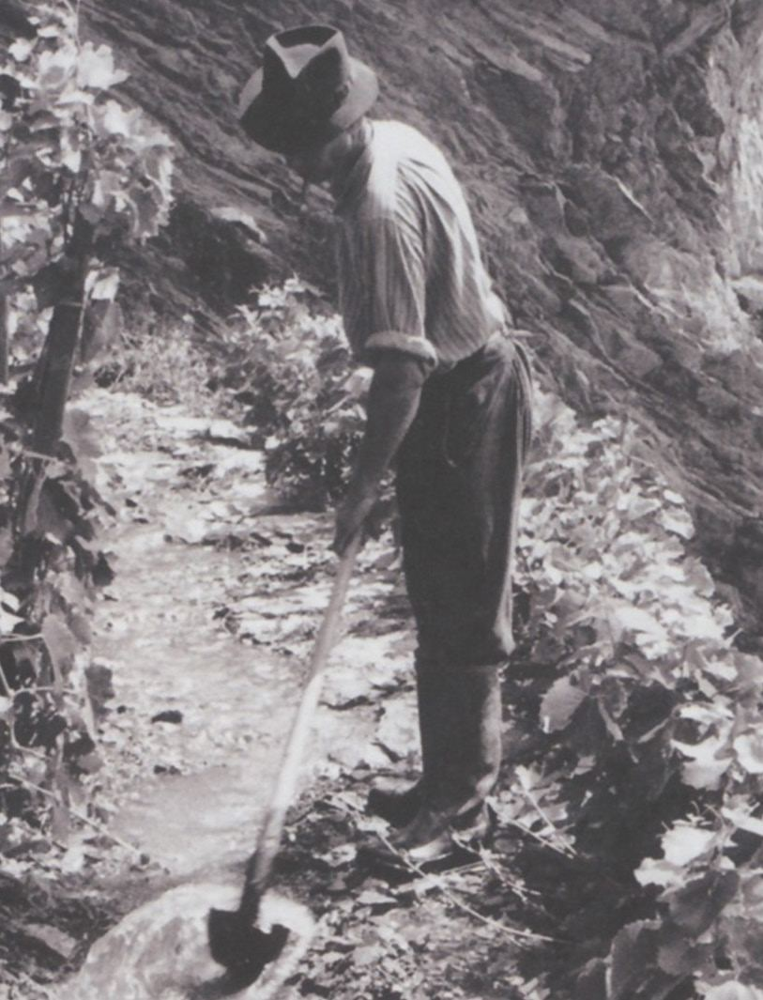

Traditional irrigation: A new Intangible Cultural Heritage of Humanity
Affiliations
- 1 Swiss Foundation for Landscape Conservation
International Terraced Landscapes Alliance Journal volume 3, issue 1, pp. 12–21 (2024) · Cite this article
- 125 views
- 201 downloads
- DOI10.5281/zenodo.14561378

Abstract
After dry stone walls, another infrastructure of terraced landscapes is in the focus of UNESCO: The submission titled “Traditional Irrigation: Knowledge, Technique, and Organization,” representing seven countries, was presented in March 2022 for consideration on the Representative List of the Intangible Cultural Heritage of Humanity. On December 5, 2023, this cultural element was officially inscribed on the list, recognizing its importance in preserving traditional irrigation practices. The UNESCO Committee had already inscribed “Art of dry-stone walling, knowledge and techniques” on the Representative List of the Intangible Cultural Heritage of Humanity on 28 November 2018.
Keywords
- traditional irrigation
- UNESCO
- intangible cultural heritage
- terraced landscapes
Introduction
On 30 March 2022, the application “Traditional Irrigation in Europe: Knowledge, Technique and Organization” was submitted to UNESCO for inclusion in the “Representative List of the Intangible Cultural Heritage of Humanity”. Austria took the lead in preparing the application together with Belgium, Germany, Italy, Luxembourg, the Netherlands and Switzerland. UNESCO evaluates the candidature in a procedure lasting several months. In Switzerland, the Wässermatten Oberaargau and the slope irrigation landscape of the Sonnenberge in the Upper Valais as well as five other water cooperatives in the Valais are involved. Some of these Suonen are also used today to irrigate vine terraces, however mostly in a technically modified way. The application was successful: On 5 December 2023 the UNESCO committee inscribed the Traditional Irrigation on the Representative List.
Traditional irrigation is a type of agricultural irrigation that relies on gravity and manually constructed structures such as channels and ditches to conduct water to the meadows, vines or gardens. Specific sets of rules and communal forms of organisation exist for watering. Switzerland was the inspiration for the idea of a European candidature of traditional irrigation for the Intangible Cultural Heritage of Humanity. A programme advisory board led by Prof. Christian Leibundgut and the Swiss Foundation for Landscape Conservation (SL-FP) had been preparing this candidature since 2013. The aim is to make the knowledge, cultural significance and social practices associated with irrigation visible internationally as well. The typical cooperative organisation around irrigation, the preservation and transfer of knowledge and the associated techniques can only take place with the cooperation of all those involved. Above all, international exchange and the cooperation that goes with it are important strategies for contributing to the preservation of this intangible cultural heritage.
Traditional irrigation - a thousand-year-old tradition in Europe that is now under threat
Today, traditional irrigation, as the lowland irrigation or hillside irrigation, is threatened with abandonment. In many places, technical irrigation systems have caused the disappearance of the tradition of irrigation of meadows, vines and gardens. Nevertheless, great efforts are visible internationally to preserve or reactivate this culture, which is up to a thousand years old. Climate adaptation and biodiversity promotion, but also social integration are new important functions of traditional irrigation techniques. In Switzerland, rescue operations for traditional irrigation have been successfully carried out since 1970 in the 108 ha large Wässermatten in Oberaargau and since the mid-1980s in Valais. Today, around 160 people are concretely involved in irrigation in the Oberaargau, and on the Upper Valais (Sonnenberge) there are several hundred people in the municipalities of Ausserberg and Baltschieder, as well as in the approximately 30 water cooperatives in the municipality of Naters. In addition, there are five other cooperatives listed in the UNESCO candidature: the Suone Eggeri in Grächen, the Grand Bisse de Lens, the Grand Bisse d’Ayent, the Bisse du Trient and the Bisse Vieux de Nendaz.
Intangible cultural heritage and UNESCO - protecting and documenting regional traditions and local knowledge
In addition to the UNESCO World Heritage Convention, the Convention for the Safeguarding of the Intangible Cultural Heritage was launched by UNESCO in 2003. This placed the focus on people’s traditional knowledge and their use of local resources and conditions, and gave international attention to the diverse living traditions. Traditional irrigation as a millennium-old knowledge makes an important contribution to sustainable development and the management of regional resources and promotes cohesion within the community. For example, through its contribution to groundwater accumulation, the practice helps mitigate flood risks, as well as the impacts of climate change at the local level (SDG 13 Climate Change Mitigation). The channels associated with irrigation (Waale1, Suonen, Bisses) also contribute positively to the conservation and enhancement of local biodiversity (SDG 15 Life on Land).
Traditional irrigation is still a cooperative, sustainable, energy-independent and biodiversity-oriented solution for water supply in agriculture. It is of great importance for the practitioners themselves as well as for the wider society and the environment. The important local significance attributed to traditional irrigation has already been recognised by the inscription of the practice on the “National Lists of Intangible Cultural Heritage” in all seven countries involved. A joint effort was undertaken to add this tradition to the international list, aiming to raise awareness of this important cultural element on a broader scale. The Intergovernmental Committee of the Conference of the Parties, which convenes annually, cast the final vote on the inclusion of Traditional Irrigation in Europe during its 18th session in December 2023.
Spectacular water worlds around the vine terraces of the Valais
Agricultural use on slopes in the semi-arid regions of the inner and Rhaetian Alps, in the Valais, in parts of Ticino and Grisons, such as in the Val Müstair and the Engadine, basically requires two things: firstly, soil, and secondly, water, whereby the latter was needed less for the rather undemanding cultivation of crops and more for gardens, meadows and pastures. Just as the soil had to be brought in for the terracing of the fields, or at least brought up again after alluvial deposits, the water also had to be brought in via artificially constructed channels. These channels, called Suonen, Wasserleiten or Bisses in the Valais, were also poetically called “holy waters” because of their vital function - based on Jakob Christoph Heer’s novel “An heiligen Wassern” (1898).
Since there was a lack of water on the sunny, primarily south-facing slopes due to the lack of springs, it was diverted from the glacial streams by means of an ingenious canal system and transported in open, often kilometer-long channels and ditches at an equal gradient to the villages and meadows. There it could be used according to certain rules. The water rights were recorded in documents, which today are among the oldest written documents of many Valais communities. As a rule, construction and maintenance were the responsibility of private cooperative bodies made up of families who depended on the irrigation and also negotiated the maintenance obligations among themselves. The strictly regulated water rights assigned specific watering times to each user and were ordered in a “Wasserkehr” (the rotation of irrigation). The maintenance of the water channels was assigned to selected individuals. The water channels are therefore part of an ancient anthropogenic landscape design. Written testimonies from the Valais become frequent since the 13th century. They form water worlds in the midst of dry mountain slopes that are historical but still relevant today and will become more important again in the future due to climate change.
Several impressive water channels supplied the terraced vineyards around Sion. They diverted water from the Liène valley (Bisse de Clavau, dating from around 1450 (Figure 1)) or from the Sionne valley (Bisse de Lentine, built in 1862 (Figure 2)). The vineyards around Sierre also had to be irrigated with water channels. Victor Pulliat mentions the saying: “Pas de Bis, pas de vigne” (No Bisse, no vine) in 1885. The water there was channelled over the broken schist (“brisées”) that covered the vineyard floor. Thanks to the schist, which is rich in potassium and phosphate, this also caused a certain natural fertilisation. Even today, a few winegrowers still practice this traditional vine irrigation out of conviction.
With the introduction of technical sprinkler systems in 1930 and the corresponding state subsidies, the traditional practice of irrigating vines and meadows (Figure 3) gradually disappeared. Many exposed channels that could only be maintained with great effort were laid in tunnels, enclosed in concrete shells or completely piped. The irrigation systems with hydrants and pumping systems still often use the water from the Suonen. In the vineyards in particular, they were often equipped with ugly concrete installations, pressure pipelines and all kinds of tubes. The former charm of the water channels has completely put aside. Thus wrote Walter Schmid in 1955: “Many of the conduits have lost their romance in recent years because, in the course of their modernisation, the engineers have replaced the wildest passages on the rock walls with tunnel constructions and the wooden channels with bare cement pipes. The old Suonen are increasingly going this way, and on this occasion one cannot avoid the question of whether one day, when technology has modernised the picturesque old installations step by step with the sobriety proper to our time, a voice might not be raised in the federal lands that feels obliged to demand the protection of the old-venerable ‘Bisses’ that require much work, effort and care” (Walter Schmid 1955. Komm mit mir ins Wallis, Bern). This voice has now become loud.
Louis Courthion had already pointed out the tourist value of the Suonen in 1920. Numerous books and the artistically outstanding photographic documentation of the folklore culture and landscapes of the Valais from the end of the 19th century contributed to raising awareness. Films also were important, like “An heiligen Wassern” (1960) and “Wasserwosser - Die Waale”, a film from the Vinschgau Valley at the beginning of the 1980s.
Since that time, there has been a real rediscovery of the Valais’ channels. In 1982, the organisation Switzerland Tourism proclaimed the “Year of the Suonen/Bisses” for the Valais. When a hydroelectric power plant was planned for the Baltschiederbach, the fate of the five remaining Suonen in the valley seemed sealed. With a protection agreement between the Swiss Foundation for Landscape Conservation (SL-FP) and the four valley municipalities, the end of the centuries-old irrigation system was prevented in 1986.
Although today there are federal and cantonal subsidies for the maintenance of the open water channels and their paths, these are often not enough, so that institutions such as the SL-FP and the Swiss Landscape Fund have to help. Thanks to them, numerous restoration projects could be realised. Various publications and tourist writings promoted public awareness. In 2010, a candidacy for UNESCO was discussed for the first time at an international colloquium on the water channels in Sion. In 2022, the candidacy has now been submitted with hopefully a positive outcome. In September 2022, an international center for traditional irrigation (IZTB) was established in St. Urban, Switzerland, with the goal of fostering knowledge exchange and networking in this field. The center was founded by Prof. Christian Leibundgut, widely regarded as Europe’s leading expert on traditional irrigation. Sadly, Prof. Leibundgut passed away in December 2023.
Until March 2026, the recently inscribed UNESCO element will be expanded to include additional interested countries, such as France, Greece, Spain, and Portugal.
The open water channels and the traditional irrigation with their centuries-old history are also indispensable for tourism, climate adaptation and biodiversity in the future. For the maintenance of the terraced landscapes, they will certainly gain more importance in the future, because both types of traditional landscapes of UNESCO unique value depend on communities of people who act together as care-takers for a cultural heritage of Humanity which reflects specially in these dark times a ray of light for peace..
Further reding
References
- Rodewald, R. 2011. Ihr schwebt über dem Abgrund – Die Walliser Terrassenlandschaften Entstehung Entwicklung Wahrnehmung, Rotten Verlag, Visp.
- Rodewald, R. 2020. New Alpiners. Nuove comunità per il paesaggio culturalein montagna, in La Montagna che produce (a cura di Viviana Ferrario e Mauro Marzo), Mimesis Ed. Milano, p. 297-310.
- https://ich.unesco.org/en/18com
- https://www.iztb.org/index.php/de/?view=article&id=54:eintrag-unesco&catid=53
Notes
- . Waale is the used term for water channels in North and South Tyrol; Suonen is used in the German part and Bisses in the French part of the Valais
Rights and permissions
Open Access. This article is licensed under a Creative Commons CC BY 4.0 license, which permits use, sharing, adaptation, distribution and reproduction in any medium or format, as long as you give appropriate credit to the original author(s) and the source and indicate if changes were made.
About this article
Cite this article
Rodewald, R. (2024). Traditional irrigation: A new Intangible Cultural Heritage of Humanity. International Terraced Landscapes Alliance Journal, 3(1), 12–21. https://doi.org/10.5281/zenodo.14561378
- Published
- December 2024
- Issue
- Volume 3, Number 1
- Journal
- International Terraced Landscapes Alliance Journal, ISSN 2754-7639 (Online)
- Archive
- Zenodo record 14561378
- traditional irrigation
- UNESCO
- intangible cultural heritage
- terraced landscapes